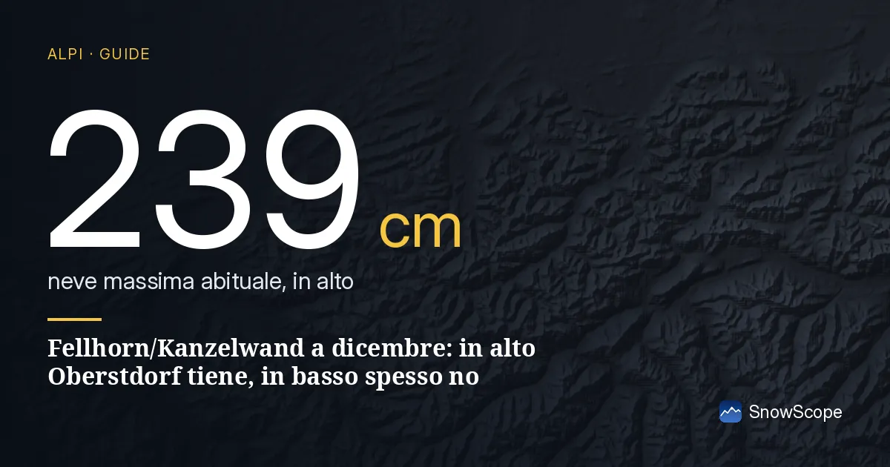
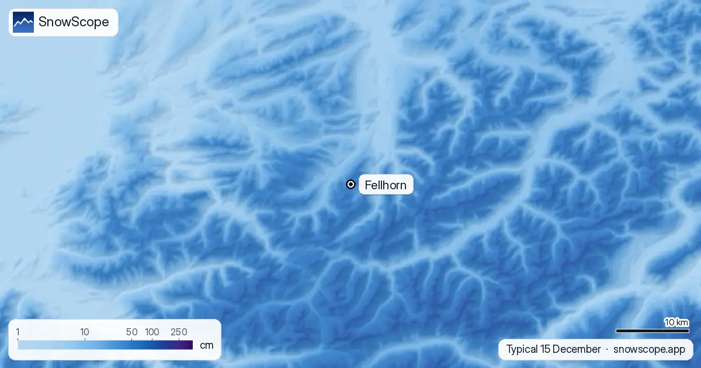

Fellhorn/Kanzelwand a dicembre: in alto Oberstdorf tiene, in basso spesso no
La profondità della neve a Fellhorn/Kanzelwand a dicembre dipende interamente da dove scii. La montagna alta resta affidabile mentre la valle rimane magra, costringendoti a scegliere: pagare la funivia in discesa oppure prenotare più tardi in inverno quando la base si recupera.
Le previsioni neve in tempo reale per Fellhorn/Kanzelwand nell'app SnowScopeAltezza neve, allerte powder e mappa 3D, gratis.
Montagna alta: dove vive la neve di dicembre
La cima a 1965 m si trova in un inverno diverso dal paese. Un tipico 15 dicembre ha 63 cm, e il 93 per cento degli ultimi 46 inverni ha avuto 30 cm o più sia nella settimana del 15-21 dicembre che nella settimana di Natale. Il 24 dicembre la profondità tipica raggiunge 88 cm.
Questa stabilità rende le piste alte la scelta più sicura per dicembre. Il crinale stesso è esposto al vento dopo le tempeste, quindi consulta i bollettini valanghe della Baviera e del Vorarlberg prima di lasciare la pista.


Mezza montagna: la zona transitoria
A 1441 m, la mezza montagna oscilla tra affidabile e magra. Un tipico 15 dicembre ha 30 cm. Le probabilità migliorano avvicinandosi a Natale: il 59 per cento degli inverni ha raggiunto 30 cm nella settimana del 15-21 dicembre, salendo al 70 per cento nella settimana di Natale.
Qui conta la settimana che scegli. Prenota 15-21 dicembre e troverai 30 cm la maggior parte dei giorni; prenota 8-14 dicembre e affronterai un'incertezza. Nella settimana di Natale la situazione migliora.
La base in valle: spesso troppo magra per fidarsi
A 918 m, dicembre è inaffidabile. La profondità tipica il 15 dicembre è solo 10 cm, e 11 degli ultimi 46 inverni hanno avuto terreno nudo in quella data. Solo il 13 per cento degli inverni ha visto 30 cm nella settimana di Natale. Il primo giorno tipico con 30 cm alla base è il 21 gennaio.
Questi numeri significano: pianifica di scendere con la funivia, oppure rimanda questa stazione a gennaio e febbraio quando la base matura. L'inverno scorso è stato peggiore del tipico—solo 2 cm il 15 dicembre e 0 cm a Natale.
La prospettiva di lungo termine: dicembre si sta assottigliando
Negli ultimi 15 inverni, dicembre si è assottigliato rispetto ai primi 15 inverni di dati (1980-81 al 1994-95). La cima fa ora una media di 59 cm contro 63 cm allora; mezza montagna è scesa da 34 cm a 28 cm. La percentuale di inverni con 30 cm a mezza montagna nella settimana di Natale è scesa dal 73 per cento al 53 per cento.
Questo trend suggerisce di prenotare la settimana di Natale solo alle quote più alte, oppure di spostare il tuo viaggio di dicembre all'inizio del mese quando la cima è più fresca.
Costo: la finestra dell'Avvento conviene
La stagione 2026-27 ha un prezzo unico (EUR 72,90 al giorno) per tutto il periodo dell'Avvento fino al 20 dicembre, poi inizia la stagione principale. L'abbonamento di 6 giorni costa EUR 344,50 in Avvento e EUR 382,80 dopo, risparmiando EUR 38,30 se finisci entro il 20 dicembre.
L'abbonamento copre tutte le funivie e le seggiovie di Oberstdorf e della Kleinwalsertal, così puoi spostarti tra le zone. Una settimana che si sviluppa tra il 15-20 dicembre ti dà lo sconto di prezzo e probabilità migliori a mezza montagna.
Oberjoch: più economico ma più magro
Oberjoch vicino a Bad Hindelang costa meno (EUR 55 al giorno, EUR 278 per 6 giorni) ma è più basso e si assottiglia più velocemente. La sua cima a 1556 m ha 30 cm in un tipico 15 dicembre contro 63 cm qui; mezza montagna raggiunge solo 30 cm nel 28 per cento degli inverni nella settimana del 15-21 dicembre. L'apertura è prevista per l'11 dicembre, dipendente dal meteo.
Se il budget è prioritario e puoi aspettare dopo Natale, Oberjoch funziona. Per l'affidabilità di dicembre, il costo extra di Fellhorn/Kanzelwand compra vera neve.
Consigli per sciatori
- Prenota il tuo abbonamento di 6 giorni per terminare entro il 20 dicembre e pagare la tariffa dell'Avvento (EUR 344,50 invece di EUR 382,80 dopo il 20).
- Aspettati di usare la funivia in discesa la maggior parte dei giorni di dicembre; non contare su 30 cm alla base fino a gennaio.
- Se il vento chiude la cima, usa il tuo abbonamento regionale per spostarti al terreno di mezza montagna o passa ai comprensori della vicina Kleinwalsertal.
- Nella settimana di Natale, la mezza montagna offre il miglior equilibrio tra profondità di neve e condizioni coerenti su entrambe le quote.
- Dopo neve fresca sul crinale esposto, consulta i bollettini valanghe della Baviera (Lawinenwarndienst Bayern) e del Vorarlberg prima di sciare fuori pista.
Su questi numeri
Le altezze neve delle località sono la neve più alta sui pendii superiori alla data indicata; sono stime per un'area, non una misura in un punto. Le previsioni possono cambiare. Leggi sempre il bollettino valanghe ufficiale prima del fuoripista.
Bollettini valanghe ufficiali: Lawinenwarndienst Bayern
Cita questo articolo
Per ricerca, didattica o stampa: numeri e grafici sono liberamente riutilizzabili con licenza CC BY 4.0 citando così.
SnowScope (2026), Fellhorn/Kanzelwand a dicembre: in alto Oberstdorf tiene, in basso spesso no, https://snowscope.app/blog/it/2026/11/fellhorn-kanzelwand-december-oberstdorf-ski-budget.html, consultato il 2026-11-14
SnowScope (Atlas Labs). (2026, November 14). Fellhorn/Kanzelwand a dicembre: in alto Oberstdorf tiene, in basso spesso no. SnowScope snow reports. https://snowscope.app/blog/it/2026/11/fellhorn-kanzelwand-december-oberstdorf-ski-budget.html
BibTeX
@misc{snowscope2026fellhornkanzelwanddecemb,
author = {{SnowScope (Atlas Labs)}},
title = {Fellhorn/Kanzelwand a dicembre: in alto Oberstdorf tiene, in basso spesso no},
year = {2026},
month = nov,
howpublished = {\url{https://snowscope.app/blog/it/2026/11/fellhorn-kanzelwand-december-oberstdorf-ski-budget.html}},
note = {Published 2026-11-14 16:14 UTC; accessed 2026-11-14}
}· CC BY 4.0 · Metodi, dati e strumenti →
Fellhorn/Kanzelwand: neve e temperatura per quota, quest'inverno vs lo scorso (strumenti) →
Segui Fellhorn/Kanzelwand
Gratis: un messaggio quando arriva la neve e il meteo ogni mattina.